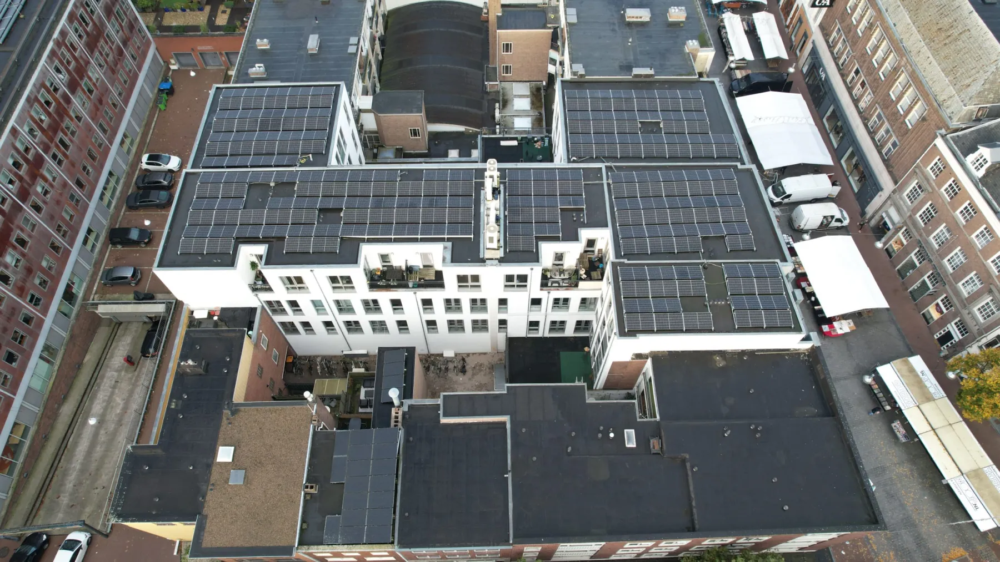
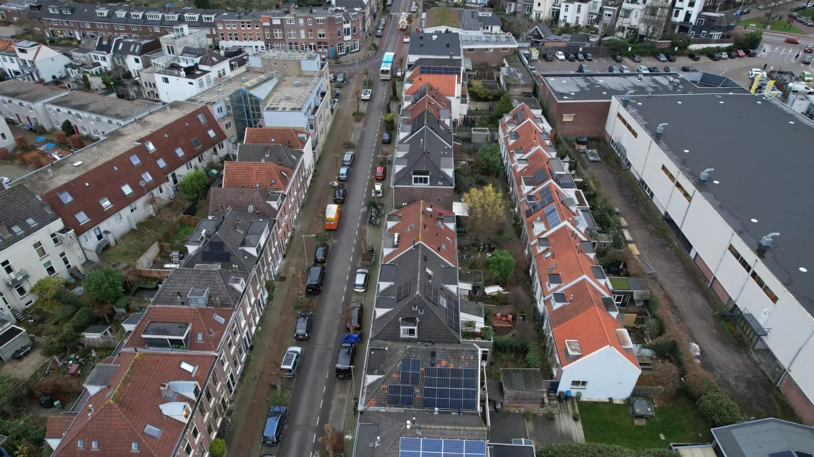

Een hele portefeuille in één traject. Niet woning voor woning.
Woningcorporaties, beleggers en verhuurders staan voor dezelfde opgave: complexen verduurzamen terwijl de regelgeving een datum heeft en bewoners het op hun energierekening merken. Vibe behandelt die woningen als één portefeuille — per complex geëngineerd, in één traject uitgevoerd.
Verduurzamen is bij u geen woningvraag, maar een portefeuillevraag.
Drie krachten drukken tegelijk op dezelfde voorraad. Elk ervan is per woning op te lossen; samen zijn ze dat niet.
De regelgeving heeft een datum
Voor sociale huurwoningen met energielabel E, F of G geldt vanaf 2028 een verhuurverbod. Daarnaast kent het woningwaarderingsstelsel puntenaftrek voor slechte energielabels: een beter label werkt door in de waardering van de woning.
De bewoner betaalt mee
Energiekosten landen rechtstreeks op de woonlasten. Een complex dat slecht presteert, is voor de bewoner elke maand voelbaar — en komt bij u terug als vraag, als klacht en als onderwerp aan de overlegtafel.
De schaal werkt tegen u
Woning voor woning aanpakken betekent telkens opnieuw opnemen, ontwerpen, inkopen, plannen en opleveren. U denkt in portefeuilles; het werk hoort in diezelfde eenheid georganiseerd te zijn.

Wie per woning rekent, blijft bezig. Wie per portefeuille ontwerpt, komt vooruit.
Portefeuillebreed werken verandert niet wat er uiteindelijk op een dak komt te liggen. Het verandert hoe vaak u het hele proces doorloopt: één opname, één ontwerplijn, één planning en één aanspreekpunt voor alle complexen samen — in plaats van een los project per adres.

Op het dak is te zien wat er is gebeurd. Binnen verandert er voor de bewoner weinig: de woning hoeft niet ingrijpend te worden aangepast.
Burchtstraat, NijmegenVan opname tot oplevering, complex na complex.
Dezelfde stappen herhalen zich over de hele portefeuille, met dezelfde mensen en dezelfde afspraken.
Opname
Daken, oriëntatie, meterkasten, aansluitingen en het huidige energielabel per complex in beeld.
Ontwerp
Per complex een legplan en een elektrotechnisch ontwerp, binnen dezelfde ontwerplijn voor de hele portefeuille.
Uitvoering
Blok voor blok, op één planning, met vaste bewonerscommunicatie en één aanspreekpunt voor uw beheerders.
Oplevering
Oplevering per complex, met monitoring en onderhoud daarna. Vibe blijft na oplevering betrokken.
Gerealiseerd in woningportefeuilles.
Complexen waar de woningen niet los van elkaar zijn aangepakt, maar als één traject — elke keer dezelfde ingreep, op een ander complex.

Nieuw-Schoonoord, Velp · juni 2024
180 woningen in één traject, energielabel +4. In twee weken uitgevoerd.

Van Beethovenstraat, Nijmegen · juni 2024
62 woningen en 302 zonnepanelen, energielabel +4.

Woningportefeuille Arnhem · december 2024
60 woningen voor een vastgoedbelegger, 254 zonnepanelen, energielabel +3. In drie weken uitgevoerd.
Na de oplevering blijft de portefeuille in beeld.
Elk complex dat wij opleveren komt onder VIBE.CONTROL te staan — dezelfde besturing voor elk blok, zodat u de complexen niet één voor één hoeft te volgen.
Vibe blijft daarna betrokken voor monitoring en onderhoud. Een installatie die niet wordt bijgestuurd, levert na een jaar minder op dan op de dag van ingebruikname.
Over VIBE.CONTROL
Goed om te weten.
Raakt het verhuurverbod van 2028 onze woningen?
Voor sociale huurwoningen met energielabel E, F of G geldt vanaf 2028 een verhuurverbod. Of uw complexen daaronder vallen, hangt af van het label dat elke woning nu heeft. Dat is het eerste wat wij bij de opname per complex vaststellen.
Wat doet een beter label met de waardering?
Het woningwaarderingsstelsel kent puntenaftrek voor slechte energielabels; een beter label werkt door in de waardering van de woning. Wat dat voor uw complexen betekent, hangt af van de huidige labels en de woningtypen — wij rekenen dat met u door en publiceren er geen vuistregel over.
Wat merken bewoners ervan?
Lagere energiekosten en eigen opwek op het eigen dak. De woning hoeft daarvoor niet ingrijpend te worden aangepast: het werk zit op het dak en bij de aansluiting, niet in de woonkamer.
Kan het gefaseerd, complex na complex?
Ja. Het ontwerp maken wij portefeuillebreed, de uitvoering gaat blok voor blok. Zo loopt de verduurzaming door zonder dat alle complexen tegelijk op de schop gaan, en blijft er één planning en één aanspreekpunt.
Moeten wij zelf investeren?
Niet per se. Naast een reguliere koop is exploitatie mogelijk: Vibe investeert, bouwt en beheert, en u betaalt voor het gebruik. Of dat in uw situatie uitkomt, beoordelen wij per portefeuille — het hangt af van de complexen, uw planning en de looptijd die u wilt.
Leg uw portefeuille eens naast de opgave.
Stuur ons de complexen, de huidige energielabels en uw planning. Wij geven per complex aan wat er op het dak en achter de meter mogelijk is, en wat dat voor de portefeuille als geheel betekent.
Vrijblijvend. Per complex of over de hele portefeuille.